I greet you this day,
These are the solutions to Mathematics questions on the topics in Trigonometry.
When applicable, the TI-84 Plus CE calculator (also applicable to TI-84 Plus calculator) solutions are provided
for some questions.
If you find these resources valuable and helpful in your learning, please
consider making a donation:
Google charges me for the hosting of this website and my other
educational websites. It does not host any of the websites for free.
Besides, I spend a lot of time to type the questions and the solutions well.
As you probably know, I provide clear explanations on the solutions.
Your donation is appreciated.
Comments, ideas, areas of improvement, questions, and constructive
criticisms are welcome.
Feel free to contact me. Please be positive in your message.
I wish you the best.
Thank you.
Please NOTE: For applicable questions (questions that require the angle in degrees), if you intend to
use the TI-84 Family:
Please make sure you set the MODE to DEGREE.
It is RADIAN by default. So, it needs to be set to DEGREE.
Coterminal Angles
Coterminal angles are angles with the same initial side and the same terminal side.
The concept of coterminal angles helps us to find the equivalent positive angle of a negative angle.
Because an angle in standard position is measured counterclockwise, adding 360° to it accounts for a full
revolution, keeping the direction intact.
Hence for any angle say θ, the coterminal angles are θ + 360k where k is any integer.
Trigonometric Functions
Right Triangle Trigonometry for any angle, say $\theta$
Pneumonic for it is: SOHCAHTOA and cosecHOsecHAcotanAO
\begin{array}{c | c}
II & I \\
\hline
III & IV
\end{array} =
\begin{array}{c | c}
S & A \\
\hline
T & C
\end{array} =
\begin{array}{c | c}
Sine\:\: is\:\: positive & All\:\: are\:\: positive \\
\hline
Tangent\:\: is\:\: positive & Cosine\:\: is\:\: positive
\end{array}
The pneumonic to remember it:
First Quadrant to Fourth Quadrant (clockwise direction): A-C-T-S (ACTS of the Apostles)
First Quadrant to Fourth Quadrant (counter-clockwise direction): A-S-T-C: ADD - SUGAR - TO - COFFEE
Fourth Quadrant to Third Quadrant (counter-clockwise direction): C-A-S-T (Simon Peter, CAST your net into the
sea.)
Second Quadrant to Third Quadrant (clockwise direction): S-A-C-T
Cofunction Identities (Identities of Complements) First Quadrant Identities First Quadrant:All (sine, cosine, tangent) are positive
This implies that cosecant, secant, and cotangent are also positive.
Given: two angles say: $\alpha$ and $\beta$;
If $\alpha$ and $\beta$ are complementary, then the: Sine function and the Cosine functions are cofunctions
$
\sin \alpha = \cos \beta \\[3ex]
\cos \alpha = \sin \beta \\[3ex]
$
Tangent function and the Cotangent functions are cofunctions
$
\tan \alpha = \cot \beta \\[3ex]
\cot \alpha = \tan \beta \\[3ex]
$
Secant function and the Cosecant functions are cofunctions
$
\sec \alpha = \csc \beta \\[3ex]
\csc \alpha = \sec \beta \\[3ex]
$
Given: one angle say: $\theta$; First Quadrant Identities or Cofunction Identities or Identities of Complements
$90 \lt \theta \lt 180$ ... Angle in Degrees
Reference Angle = $180 - \theta$ ... Angle in Degrees
$\dfrac{\pi}{2} \lt \theta \lt \pi$ ... Angle in Radians
Reference Angle = $\pi - \theta$ ... Angle in Radians Second Quadrant:sine is positive
This implies that cosecant is also positive
Symmetric across the y-axis
Given: one angle say: $\theta$;
Supplement of $\theta$ = $180 - \theta$ where $\theta$ is in degrees:
Supplement of $\theta$ = $\pi - \theta$ where $\theta$ is in radians:
$
(1.)\;\; \sin \theta = \dfrac{1}{\csc \theta} \\[3ex]
(2.)\;\; \cos \theta = \dfrac{1}{\sec \theta} \\[3ex]
(3.)\;\; \tan \theta = \dfrac{1}{\cot \theta} \\[5ex]
$
Quotient Identities
$
(1.)\;\; \tan \theta = \dfrac{\sin \theta}{\cos \theta} \\[3ex]
(2.)\;\; \cot \theta = \dfrac{\cos \theta}{\sin \theta} \\[3ex]
$
As you can see, $\cot \theta$ has two formulas
$
\cot \theta = \dfrac{1}{\tan \theta} \\[5ex]
\cot \theta = \dfrac{\cos \theta}{\sin \theta} \\[5ex]
$
Sometimes, we shall use the first one. Sometimes, we shall use the second one.
We have to use the formula that will not give us an undefined value (where the denominator is zero)
Even Identities
Recall: a function, say $f(x)$ is even if $f(-x) = f(x)$
In Trigonometry, the cosine function and the secant function are even functions.
$
(1.)\;\; \cos (-\theta) = \cos \theta \\[3ex]
(2.)\;\; \sec (-\theta) = \sec \theta \\[5ex]
$
Odd Identities
Recall: a function, say $f(x)$ is odd if $f(-x) = -f(x)$
In Trigonometry, the sine function, the cosecant function,
the tangent function, and the cotangent function are odd functions.
Sine Law:
Applies to all triangles.
It states that the ratio of the side length of any triangle to the sine of the angle measure opposite that side
is the same for the three sides of the triangle.
The ratio of the angle measure of any triangle to the side length opposite that angle is the same for the three
angles of the triangle.
$
\dfrac{\sin A}{a} = \dfrac{\sin B}{b} = \dfrac{\sin C}{c} \\[5ex]
$
Cosine Law:
Applies to all triangles.
It states that the square of a side of a triangle is the difference between the sum of the squares of the other
two sides and twice the product of the two sides and the included angle.
$
a^2 = b^2 + c^2 - 2bc \cos A \\[3ex]
\cos A = \dfrac{b^2 + c^2 - a^2}{2bc} \\[5ex]
\rightarrow A = \cos^{-1} \left(\dfrac{b^2 + c^2 - a^2}{2bc}\right) \\[5ex]
b^2 = a^2 + c^2 - 2ac \cos B \\[3ex]
\cos B = \dfrac{a^2 + c^2 - b^2}{2ac} \\[5ex]
\rightarrow B = \cos^{-1} \left(\dfrac{a^2 + c^2 - b^2}{2ac}\right) \\[5ex]
c^2 = a^2 + b^2 - 2ab \cos C \\[3ex]
\cos C = \dfrac{a^2 + b^2 - c^2}{2ab} \\[5ex]
\rightarrow C = \cos^{-1} \left(\dfrac{a^2 + b^2 - c^2}{2ab}\right) \\[5ex]
$
Theorems
(1.) Sum of Angles of a Triangle Theorem:
The sum of the interior angles of a triangle is 180°
(2.) In a 30° – 60° – 90° right triangle; the length of the hypotenuse
is twice the length of the short side.
(3.) In a 30° – 60° – 90° right triangle; the length of the middle side
is the square root of 3 times the length of short side.
(4.) In a 45° – 45° – 90° right triangle theorem (Right Isosceles Triangle
Theorem); the length of the hypotenuse is the square root of 2 times the length of either side.
(5.) Pythagorean Theorem: Applies only to right triangles.
In a right triangle, the square of the length of the hypotenuse is the
sum of the squares of the short side and the middle side.
$hyp^2 = leg^2 + leg^2$
(6.) Converse of the Pythagorean Theorem (Right Triangle Theorem):
If the square of the long side(hypotenuse) is the
sum of the squares of the other two sides, then the triangle is a right triangle.
(7.) Acute Triangle Theorem: If the square of the long side is less than the sum of the squares of the
other two sides, then the triangle is an acute triangle.
(8.) Obtuse Triangle Theorem: If the square of the long side is greater than the sum of the squares of
the other two sides, then the triangle is an obtuse triangle.
(9.) Triangle Inequality Theorem: This is the theorem that determines if you can form a triangle using
any three lengths.
The sum of the lengths of any two sides of a triangle is greater than the length of the third side.
(10.) Side Length – Angle Measure Theorem: If any two side lengths of a triangle are unequal; the
angles of the triangle are also unequal, and the measure of an angle is opposite the length of the side facing
that angle as regards size.
The measure of the smallest angle is opposite the shortest side length.
The measure of the greatest angle is opposite the longest side length.
The measure of the middle angle is opposite the middle side length.
In other words; regarding size, the measure of an angle is opposite the length of the side facing the
angle; or the side length facing an angle is opposite the angle measure as regards size.
Small side faces small angle, middle side faces middle angle, big side faces big angle
(11.) Exterior Angle of a Triangle Theorem: The exterior angle of a triangle is the sum of the two
interior opposite angles.
(12.) Isosceles Base Angles Theorem: The base angles of an isosceles triangle are equal.
(13.) Converse of the Isosceles Base Angles Theorem: If the base angles of a triangle are equal, then the
triangle is an isosceles triangle.
(14.) Perpendicular Bisector of the Base of an Isosceles Triangle Theorem: It states that if a line
bisects the vertex angle of an isosceles triangle, then the line is also the perpendicular
bisector of the base (the line also bisects the base of that isosceles triangle at right angles).
(15.) Perpendicular Height to Base of Isosceles Triangle Theorem It states that the perpendicular height
drawn from the apex of an isosceles triangle to the base:
(a.) bisects the base
(b.) bisects the apex angle.
(16.) Side-Splitter Theorem Applies to all triangles with inserted parallel lines as applicable.
It states that if a line segment is parallel to one side of a triangle and intersects the other two sides of
the triangle, then it divides those two sides proportionally.
(17.) Midpoint Theorem Applies to all triangles in which a line segment
joins the midpoints of any two sides of the triangle.
It states that if a line segment joins any two sides of a triangle, then the line segment:
(a.) is parallel to the third side.
(b.) bisects the third side.
(18.) Converse of the Midpoint Theorem A line segment drawn through the midpoint of one side of a
triangle and parallel to another side, bisects the third side.
(19.) Scale Factor, Perimeter Ratio, and Area Ratio of Similar Figures Theorem Applies to all similar
figures including similar triangles.
It states that for two similar figures, the ratio of the perimeters is the same as the scale factor; and the
ratio of the areas is the ratio of the square of the scale factor.
Circle Formulas
Except stated otherwise, use:
$
d = diameter \\[3ex]
r = radius \\[3ex]
L = arc\:\:length \\[3ex]
A = area\;\;of\;\;sector \\[3ex]
P = perimeter\;\;of\;\;sector \\[3ex]
\theta = central\:\:angle \\[3ex]
\pi = \dfrac{22}{7} \\[5ex]
RAD = radians \\[3ex]
^\circ = DEG = degrees \\[7ex]
\underline{\theta\;\;in\;\;DEG} \\[3ex]
L = \dfrac{2\pi r\theta}{360} = \dfrac{\pi r\theta}{180} \\[5ex]
\theta = \dfrac{180L}{\pi r} \\[5ex]
r = \dfrac{180L}{\pi \theta} \\[5ex]
A = \dfrac{\pi r^2\theta}{360} \\[5ex]
\theta = \dfrac{360A}{\pi r^2} \\[5ex]
r = \dfrac{360A}{\pi\theta} \\[5ex]
P = \dfrac{r(\pi\theta + 360)}{180} \\[7ex]
\underline{\theta\;\;in\;\;RAD} \\[3ex]
L = r\theta \\[5ex]
\theta = \dfrac{L}{r} \\[5ex]
r = \dfrac{L}{\theta} \\[5ex]
A = \dfrac{r^2\theta}{2} \\[5ex]
\theta = \dfrac{2A}{r^2} \\[5ex]
r = \sqrt{\dfrac{2A}{\theta}} \\[5ex]
P = r(\theta + 2) \\[7ex]
Circumference\:\:of\:\:a\:\:circle = 2\pi r = \pi d \\[3ex]
L = \dfrac{2A}{r} \\[5ex]
r = \dfrac{2A}{L} \\[5ex]
A = \dfrac{Lr}{2}
$
(1.) Prove that $\sec^6 x - \tan^6 x = 1 + 3\sec^2 x\tan^2 x$
$
\sec^6 x - \tan^6 x = 1 + 3\sec^2 x\tan^2 x \\[4ex]
\text{From the LHS} \\[4ex]
\sec^6 x - \tan^6 x \\[5ex]
Let: \\[3ex]
A = \sec^2 x \\[3ex]
B = \tan^2 x \\[5ex]
\sec^6 x - \tan^6 x = (\sec^2 x)^3 - (\tan^2 x)^3 \\[4ex]
= A^3 - B^3 \\[4ex]
= (A - B)(A^2 + AB + B^2) ...\text{Difference of Two Cubes} \\[3ex]
= (\sec^2 x - \tan^2 x)[(\sec^2 x)^2 + \sec^2 x(\tan^2 x) + (\tan^2 x)^2] \\[4ex]
..........................................................................\\[3ex]
\tan^2 x + 1 = \sec^2 x...\text{Pythagorean Identity} \\[3ex]
\sec^2 x - \tan^2 x = 1 \\[3ex]
\text{Substitute for } \sec^2 x - \tan^2 x \\[4ex]
..........................................................................\\[3ex]
= 1[(\sec^2 x)^2 + \sec^2 x(\tan^2 x) + (\tan^2 x)^2] \\[4ex]
= \sec^4 x + \sec^2 x \tan^2 x + \tan^4 x \\[4ex]
..........................................................................\\[3ex]
\sec^2 x = 1 + \tan^2 x \\[3ex]
\sec^4 x = (\sec^2 x)^2 \\[4ex]
\sec^4 x = (1 + \tan^2 x)^2 \\[4ex]
\text{Substitute for } \sec^4 x \\[4ex]
..........................................................................\\[3ex]
= (1 + \tan^2 x)^2 + \sec^2 x \tan^2 x + \tan^4 x \\[4ex]
= (1 + \tan^2 x)(1 + \tan^2 x) + \sec^2 x \tan^2 x + \tan^4 x \\[4ex]
= 1 + \tan^2 x + \tan^2 x + \tan^4 x + \sec^2 x \tan^2 x + \tan^4 x \\[4ex]
= 2\tan^4 x + 2\tan^2 x + 1 + \sec^2 x \tan^2 x \\[4ex]
= 2\tan^2 x(\tan^2 x + 1) + 1 + \sec^2 x \tan^2 x \\[4ex]
\text{Substitute for } \tan^2 x + 1 ...\text{Pythagorean Identity} \\[3ex]
= 2\tan^2 x \sec^2 x + 1 + \sec^2 x \tan^2 x \\[4ex]
= 2\sec^2 x \tan^2 x + 1 + \sec^2 x \tan^2 x \\[4ex]
= 1 + 3\sec^2 x\tan^2 x \\[4ex]
= RHS
$
(2.) Solve $\tan 3x = -1$ for $-\dfrac{\pi}{2} \le x \le \dfrac{\pi}{2}$, giving your answer in terms of π
Check your solution.
We shall work in degrees, find the answer(s) in degrees, then convert back to radians
$
\pi\;radians = 180^\circ \\[3ex]
-\dfrac{\pi}{2}\;radians = -\dfrac{180^\circ}{2} = -90^\circ \\[5ex]
\dfrac{\pi}{2}\;radians = \dfrac{180^\circ}{2} = 90^\circ \\[5ex]
\tan 3x = -1 \\[3ex]
3x = \tan^{-1}(-1) \\[3ex]
3x = -45 \\[3ex]
x = -\dfrac{45}{3} \\[5ex]
x = -15^\circ \\[3ex]
-15^\circ \text{ is in the interval } [-90^\circ, 90^\circ] ...\text{keep it} \\[5ex]
\text{tangent is negative in the 2nd and 4th quadrants} \\[3ex]
180 - 15 = 165^\circ ...\text{2nd Quadrant Identity} \\[3ex]
165^\circ \text{ is not in the interval } [-90^\circ, 90^\circ] ...\text{discard it} \\[3ex]
\text{The other angle based on 4th Quadrant will not be in the interval } [-90^\circ, 90^\circ] \\[5ex]
\text{Convert degrees to radians} \\[3ex]
-15^\circ * \dfrac{\pi\;radians}{180^\circ} \\[5ex]
= -\dfrac{\pi}{12} \\[5ex]
x = -\dfrac{\pi}{12}\;radians \\[5ex]
$
Check
(4.) Solve the equation $3\sin\left(2x + \dfrac{\pi}{4}\right) = \sqrt{3}\cos\left(2x + \dfrac{\pi}{4}\right)$
for
$0 \le x \le \pi$
Check your solution.
We shall work in degrees, find the answer(s) in degrees, then convert back to radians
$
3\sin\left(2x + \dfrac{\pi}{4}\right) = \sqrt{3}\cos\left(2x + \dfrac{\pi}{4}\right) \;\;for\;\; 0 \le x \le
\pi \\[5ex]
\pi\;radians = 180^\circ \\[3ex]
Let\;\; 2x + \dfrac{\pi}{4} = p \\[5ex]
p = 2x + \dfrac{180}{4} \\[5ex]
p = 2x + 45 \\[5ex]
3\sin p = \sqrt{3} \cos p \\[3ex]
\dfrac{\sin p}{\cos p} = \dfrac{\sqrt{3}}{3} \\[5ex]
\tan p = \dfrac{\sqrt{3}}{3} \\[5ex]
p = \tan^{-1}\left(\dfrac{\sqrt{3}}{3} \right) \\[5ex]
p = 30^\circ \\[3ex]
\text{tangent is positive in the 1st and 3rd quadrants} \\[3ex]
30^\circ ...\text{1st quadrant} \\[3ex]
30 + 180 = 210^\circ...\text{3rd Quadrant Identity} \\[5ex]
When: \\[3ex]
p = 30^\circ \\[3ex]
2x + 45 = 30 \\[3ex]
2x = 30 - 45 \\[3ex]
2x = -15 \\[3ex]
x = -\dfrac{15}{2} \\[5ex]
x = -7.5^\circ \\[3ex]
-7.5^\circ \text{ is not in the interval } [0^\circ, 180^\circ] ...\text{discard it} \\[5ex]
When: \\[3ex]
p = 210^\circ \\[3ex]
2x + 45 = 210 \\[5ex]
2x = 210 - 45 \\[3ex]
2x = 165 \\[3ex]
x = \dfrac{165}{2} \\[5ex]
x = 82.5^\circ \\[3ex]
82.5^\circ \text{ is in the interval } [0^\circ, 180^\circ] ...\text{keep it} \\[5ex]
\text{Convert degrees to radians} \\[3ex]
82.5^\circ * \dfrac{\pi\;radians}{180^\circ} \\[5ex]
= \dfrac{825}{10} * \dfrac{\pi}{180} \\[5ex]
= \dfrac{11\pi}{24} \\[5ex]
x = \dfrac{11\pi}{24}\;radians \\[5ex]
$
Check
(5.) Solve the equation $\tan(B + 150^\circ) = -\sqrt{3}$ for 0° ≤ B ≤ 360°
Check your solution.
$
\tan(B + 150^\circ) = -\sqrt{3} \\[3ex]
\text{tangent is negative in the 2nd and 4th quadrants} \\[3ex]
B + 150 = \tan^{-1}{-\sqrt{3}} \\[3ex]
B + 150 = -60 \\[3ex]
B = -60 - 150 \\[3ex]
B = -210^\circ \\[3ex]
-210^\circ \text{ is not in the interval } [0^\circ, 360^\circ] ...\text{discard it} \\[5ex]
\underline{\text{2nd Quadrant Identity}} \\[3ex]
B + 150 = 180 - 60 \\[3ex]
B + 150 = 120 \\[3ex]
B = 120 - 150 \\[3ex]
B = -30^\circ \\[3ex]
-30^\circ \text{ is not in the interval } [0^\circ, 360^\circ] ...\text{discard it} \\[5ex]
\underline{\text{4th Quadrant Identity}} \\[3ex]
B + 150 = 360 - 60 \\[3ex]
B + 150 = 300 \\[3ex]
B = 300 - 150 \\[3ex]
B = 150^\circ \\[3ex]
150^\circ \text{ is in the interval } [0^\circ, 360^\circ] ...\text{keep it} \\[5ex]
\text{Let us find the other angles in that range} \\[3ex]
\underline{\text{Coterminal Angles}} \\[3ex]
B = -210 + 360 \\[3ex]
B = 150^\circ...\text{got it already} \\[5ex]
B = -30 + 360 \\[3ex]
B = 330^\circ \\[3ex]
330^\circ \text{ is in the interval } [0^\circ, 360^\circ] ...\text{keep it} \\[5ex]
\therefore B = 150^\circ, 330^\circ \\[3ex]
$
Check
(6.) An aircraft flies 400 km from a point O on a bearing of 025° and then 700 km on a bearing of
080° to arrive at point B
(a.) Represent the information on a diagram.
(b.) How far north of O is B?
(c.) How far east of O is B?
(d.) Calculate the distance of B from O
(e.) Calculate the bearing of B from O
(a.) The diagrammatic information is shown:
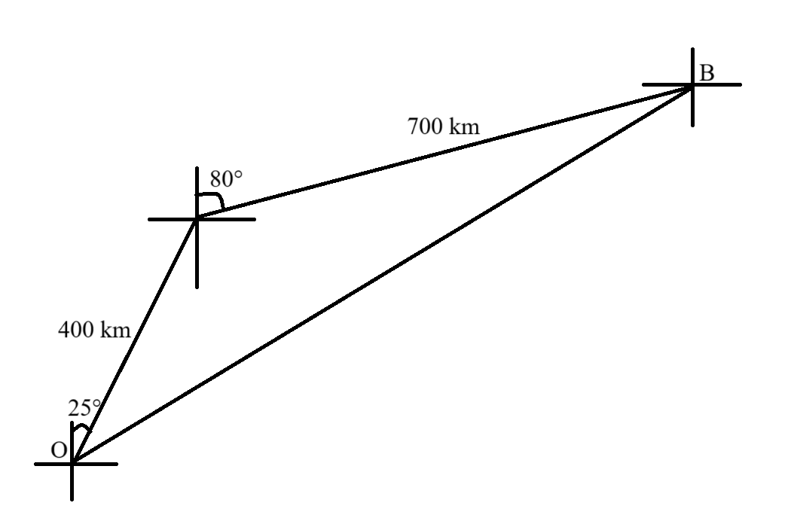
(b.) How far north of O is B?
Let the middle point between point O and point B be point A
We need to calculate the distance north from point O to point A and the distance north from
point A to point B
Distance north from point O to point A = |OC|
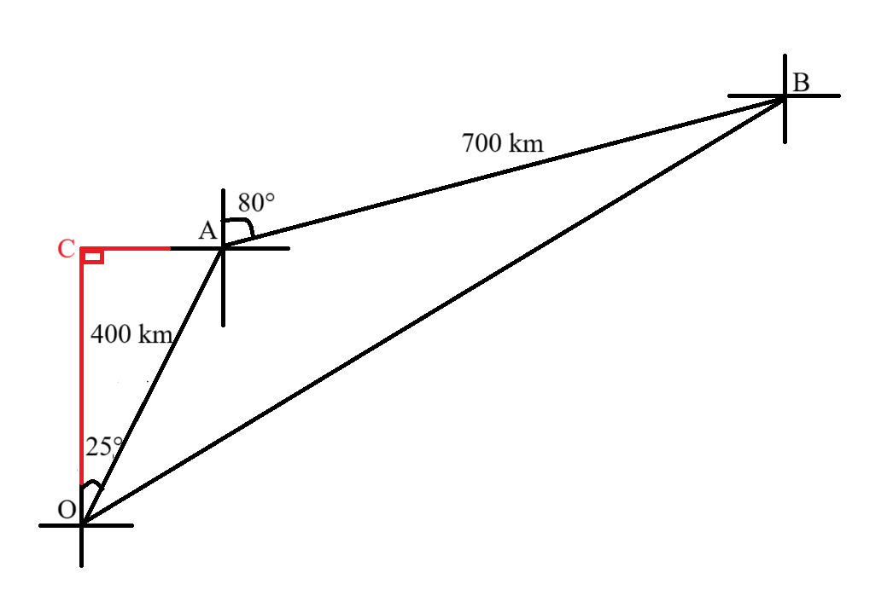
$
\underline{Right \;\;\triangle OCA} \\[3ex]
\cos\angle COA = \dfrac{adj}{hyp} = \dfrac{|OC|}{|OA|}...SOHCAHTOA \\[5ex]
\cos 25^\circ = \dfrac{|OC|}{400} \\[5ex]
|OC| = 400\cos 25 \\[3ex]
|OC| = 362.5231148\;km \\[3ex]
$
Distance north from point A to point B = |AD|
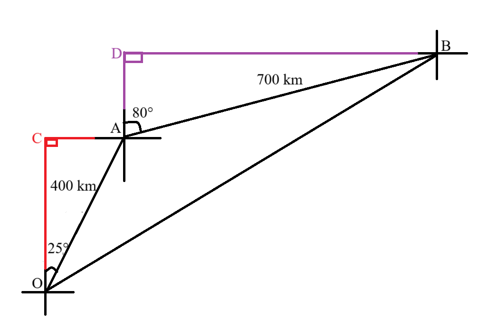
$
\underline{Right \;\;\triangle ADB} \\[3ex]
\cos\angle DAB = \dfrac{adj}{hyp} = \dfrac{|AD|}{|AB|}...SOHCAHTOA \\[5ex]
\cos 80^\circ = \dfrac{|AD|}{700} \\[5ex]
|AD| = 700\cos 80 \\[3ex]
|AD| = 121.5537244\;km \\[3ex]
$
How far north of O is B
= 362.5231148 + 121.5537244
= 484.0768392 km
(c.) How far east of O is B?
We need to calculate the distance east from point O to point A and the distance east from
point A to point B
Distance east from point O to point A = |CA|
$
\underline{Right \;\;\triangle OCA} \\[3ex]
\sin\angle COA = \dfrac{opp}{hyp} = \dfrac{|CA|}{|OA|}...SOHCAHTOA \\[5ex]
\sin 25^\circ = \dfrac{|CA|}{400} \\[5ex]
|CA| = 400\sin 25 \\[3ex]
|CA| = 169.0473047\;km \\[3ex]
$
Distance east from point A to point B = |DB|
$
\underline{Right \;\;\triangle ADB} \\[3ex]
\sin\angle DAB = \dfrac{opp}{hyp} = \dfrac{|DB|}{|AB|}...SOHCAHTOA \\[5ex]
\sin 80^\circ = \dfrac{|DB|}{700} \\[5ex]
|DB| = 700\sin 80 \\[3ex]
|DB| = 689.3654271\;km \\[3ex]
$
How far east of O is B
= 169.0473047 + 689.3654271
= 858.4127318 km
(d.) Calculate the distance of B from O
and
(e.) Calculate the bearing of B from O
We can calculate the distance and the bearing of B from O using at least two approches
Use any approach that you prefer.
1st Approach: Diagram 2: (dark blue color)
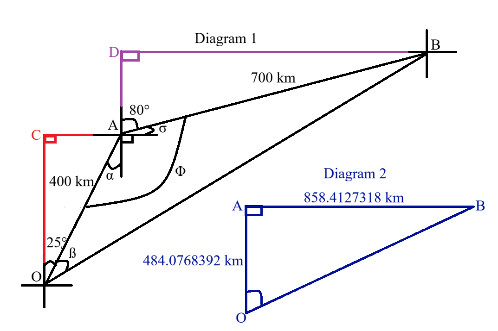
This approach is based on our results from (b.) and (c.)
The denominator is a product of sines (two sine functions)
Our goal is to write the expression as a series of telescoping sums
If the denominator of the series is a sum of the product of sines, then use a Difference of Sines formula
for the numerator.
$
\pi\;RAD = 180^\circ \\[3ex]
\underline{\text{Substitutions}} \\[3ex]
Let: \\[3ex]
A = \dfrac{\pi}{4} + \dfrac{\pi(k - 1)}{6} \\[5ex]
B = \dfrac{\pi}{4} + \dfrac{k\pi}{6} \\[5ex]
.......................................................................................... \\[3ex]
Assume\;\; B - A \\[3ex]
= \dfrac{\pi}{4} + \dfrac{k\pi}{6} - \left[\dfrac{\pi}{4} + \dfrac{\pi(k - 1)}{6}\right] \\[5ex]
= \dfrac{\pi}{4} + \dfrac{k\pi}{6} - \dfrac{\pi}{4} - \dfrac{\pi(k - 1)}{6} \\[5ex]
= \dfrac{k\pi}{6} - \dfrac{\pi(k - 1)}{6} \\[5ex]
= \dfrac{k\pi - k\pi + \pi}{6} \\[5ex]
= \dfrac{\pi}{6} \\[5ex]
\underline{\text{Assumed Numerator: Part 1}} \\[3ex]
\sin(B - A) \\[3ex]
= \sin \left(\dfrac{\pi}{6}\right) \\[5ex]
= \sin \left(\dfrac{180}{6}\right)^\circ \\[5ex]
= \sin 30^\circ \\[3ex]
= \dfrac{1}{2} \\[5ex]
\underline{\text{Assumed Numerator: Part 2}} \\[3ex]
\text{Difference of Sines formula} \\[3ex]
\sin(B - A) = \sin B \cos A - \cos B \sin A \\[5ex]
\underline{\text{Denominator}} \\[3ex]
\sin\left[\dfrac{\pi}{4} + \dfrac{\pi(k - 1)}{6}\right] *
\sin\left(\dfrac{\pi}{4} + \dfrac{k\pi}{6}\right) \\[5ex]
= \sin A \sin B \\[5ex]
\underline{\text{Quotient 1}} \\[3ex]
\underline{\text{Assumed Numerator: Part 1} \div \text{Denominator}} \\[3ex]
\dfrac{1}{2} \div \sin A \sin B \\[3ex]
= \dfrac{1}{2} * \dfrac{1}{\sin A \sin B} \\[5ex]
= \dfrac{1}{2\sin A \sin B} \\[5ex]
\underline{\text{Quotient 2}} \\[3ex]
\underline{\text{Assumed Numerator: Part 2} \div \text{Denominator}} \\[3ex]
\sin B \cos A - \cos B \sin A \div \sin A \sin B \\[3ex]
= \dfrac{\sin B \cos A - \cos B \sin A}{\sin A \sin B} \\[5ex]
= \dfrac{\sin B \cos A}{\sin A \sin B} - \dfrac{\cos B \sin A}{\sin A \sin B} \\[5ex]
= \dfrac{\cos A}{\sin A} - \dfrac{\cos B}{\sin B} \\[5ex]
= \cot A - \cot B \\[3ex]
\text{Let us equate both quotients to try and get a modified form for the initial expression} \\[3ex]
\underline{\text{Quotient 1 = Quotient 2}} \\[3ex]
\dfrac{1}{2\sin A \sin B} = \cot A - \cot B \\[5ex]
\dfrac{1}{\sin A \sin B} = 2(\cot A - \cot B) \\[5ex]
\text{Substituting back...} \\[3ex]
\implies \\[3ex]
\dfrac{1}{\sin\left[\dfrac{\pi}{4} + \dfrac{\pi(k - 1)}{6}\right] *
\sin\left(\dfrac{\pi}{4} + \dfrac{k\pi}{6}\right)} = 2(\cot A - \cot B) \\[7ex]
\text{The initial expression equals the RHS} \\[3ex]
\text{Let us now work on the RHS} \\[3ex]
.......................................................................................... \\[3ex]
2(\cot A - \cot B) \\[3ex]
= 2\left[\cot \left(\dfrac{\pi}{4} + \dfrac{\pi(k - 1)}{6}\right) - \cot \left(\dfrac{\pi}{4} +
\dfrac{k\pi}{6}\right)\right] \\[5ex]
Sum = \sum\limits_{k = 1}^{13} 2\left[\cot \left(\dfrac{\pi}{4} + \dfrac{\pi(k - 1)}{6}\right) - \cot
\left(\dfrac{\pi}{4} + \dfrac{k\pi}{6}\right)\right] \\[5ex]
Sum = 2\sum\limits_{k = 1}^{13} \left[\cot \left(\dfrac{\pi}{4} + \dfrac{\pi(k - 1)}{6}\right) - \cot
\left(\dfrac{\pi}{4} + \dfrac{k\pi}{6}\right)\right] \\[5ex]
$
This is now a telescoping sum
"telescoping" is analogous to how a collapsible telescope extends and retracts.
We needed a telescoping sum (also known as a telescoping series) so that the intermediate values will cancel
out, leaving us with only the first and last terms.
$
\text{For k = 1}: \\[3ex]
Term_1 = 2\left[\cot \left(\dfrac{\pi}{4} + \dfrac{\pi(1 - 1)}{6}\right) - \cot
\left(\dfrac{\pi}{4} + \dfrac{1 * \pi}{6}\right)\right] \\[5ex]
Term_1 = 2\left[\cot \left(\dfrac{\pi}{4}\right) - \cot
\left(\dfrac{\pi}{4} + \dfrac{\pi}{6}\right)\right] \\[5ex]
\text{For k = 2}: \\[3ex]
Term_2 = 2\left[\cot \left(\dfrac{\pi}{4} + \dfrac{\pi(2 - 1)}{6}\right) - \cot
\left(\dfrac{\pi}{4} + \dfrac{2 * \pi}{6}\right)\right] \\[5ex]
Term_2 = 2\left[\cot \left(\dfrac{\pi}{4} + \dfrac{\pi}{6}\right) - \cot
\left(\dfrac{\pi}{4} + \dfrac{2\pi}{6}\right)\right] \\[5ex]
\text{For k = 3}: \\[3ex]
Term_3 = 2\left[\cot \left(\dfrac{\pi}{4} + \dfrac{\pi(3 - 1)}{6}\right) - \cot
\left(\dfrac{\pi}{4} + \dfrac{3 * \pi}{6}\right)\right] \\[5ex]
Term_3 = 2\left[\cot \left(\dfrac{\pi}{4} + \dfrac{2\pi}{6}\right) - \cot
\left(\dfrac{\pi}{4} + \dfrac{3\pi}{6}\right)\right] \\[5ex]
\text{For k = 4}: \\[3ex]
Term_4 = 2\left[\cot \left(\dfrac{\pi}{4} + \dfrac{\pi(4 - 1)}{6}\right) - \cot
\left(\dfrac{\pi}{4} + \dfrac{4 * \pi}{6}\right)\right] \\[5ex]
Term_4 = 2\left[\cot \left(\dfrac{\pi}{4} + \dfrac{3\pi}{6}\right) - \cot
\left(\dfrac{\pi}{4} + \dfrac{4\pi}{6}\right)\right] \\[5ex]
... \\[3ex]
\text{For k = 13}: \\[3ex]
Term_{13} = 2\left[\cot \left(\dfrac{\pi}{4} + \dfrac{\pi(13 - 1)}{6}\right) - \cot
\left(\dfrac{\pi}{4} + \dfrac{13 * \pi}{6}\right)\right] \\[5ex]
Term_{13} = 2\left[\cot \left(\dfrac{\pi}{4} + \dfrac{12\pi}{6}\right) - \cot
\left(\dfrac{\pi}{4} + \dfrac{13\pi}{6}\right)\right] \\[5ex]
$
We do not have to list each term because the intermediate terms will cancel out as we get the sum of the
series.
This leaves us with only the first term of Term 1 and the last term of Term 13
Let us indicate the information on the diagram one at a time. AB = AD
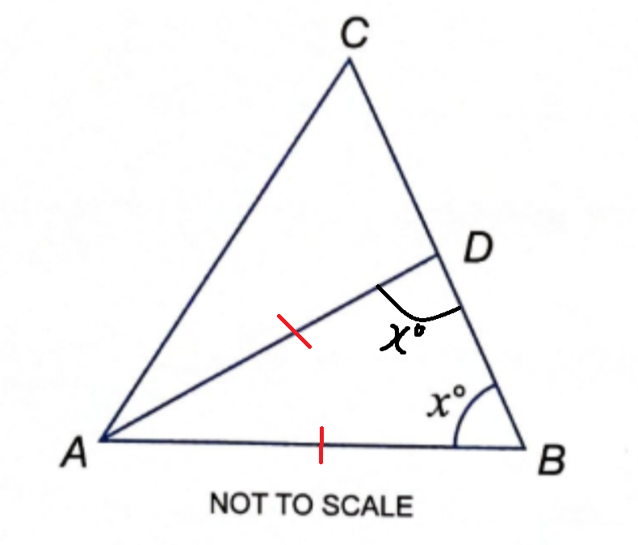
$
\underline{\triangle ADB} \\[3ex]
\angle ADB = \angle ABD = x ...\text{base angles of isosceles triangle} \\[5ex]
\text{Straight Line CDB} \\[3ex]
\angle ADC + \angle ADB = 180^\circ ...\text{sum of angles on a straight line} \\[3ex]
\angle ADC + x = 180 \\[3ex]
\angle ADC = 180 - x \\[3ex]
$
AD = DC
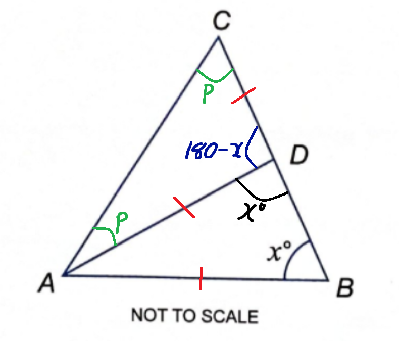
$
\underline{\triangle ADC} \\[3ex]
\angle CAD = \angle ACD = p ...\text{base angles of isosceles triangle} \\[3ex]
\angle CAD + \angle ACD + \angle ADC = 180^\circ ...\text{sum of angles in a triangle} \\[3ex]
p + p + (180 - x) = 180 \\[3ex]
2p + 180 - x = 180 \\[3ex]
2p = 180 - 180 + x \\[3ex]
2p = x \\[3ex]
p = \dfrac{x}{2} \\[5ex]
$
Indicate it accordingly
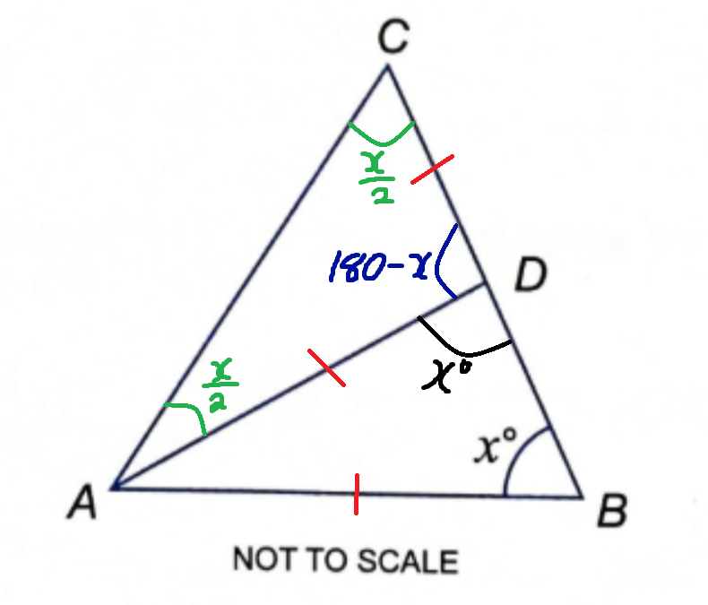
Let us do the next one AC = BC
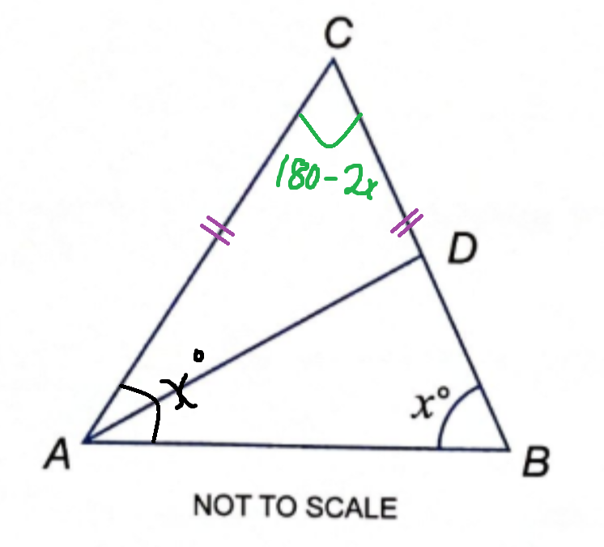
$
\underline{\triangle ACB} \\[3ex]
\angle CAB = \angle CBA = x ...\text{base angles of isosceles triangle} \\[3ex]
\angle ACB + \angle CAB + \angle CBA = 180^\circ ...\text{sum of angles in a triangle} \\[3ex]
\angle ACB + x + x = 180 \\[3ex]
\angle ACB = 180 - x - x \\[3ex]
\angle ACB = 180 - 2x \\[5ex]
\angle ACB = \angle ACD = \dfrac{x}{2} ...\text{diagram} \\[5ex]
\angle ACB = \angle ACB \\[3ex]
\implies \\[3ex]
\dfrac{x}{2} = 180 - 2x \\[3ex]
x = 2(180 - 2x) \\[3ex]
x = 360 - 4x \\[3ex]
x + 4x = 360 \\[3ex]
5x = 360 \\[3ex]
x = \dfrac{360}{5} \\[5ex]
x = 72^\circ
$
(9.) In the figure, $\triangle ABC$, $\triangle ADC$, $\triangle BDE$ are right-angled triangles, where
$\angle ADC = 60^\circ$, $AC = \sqrt{6}$ and $\angle DBE = 45^\circ$.
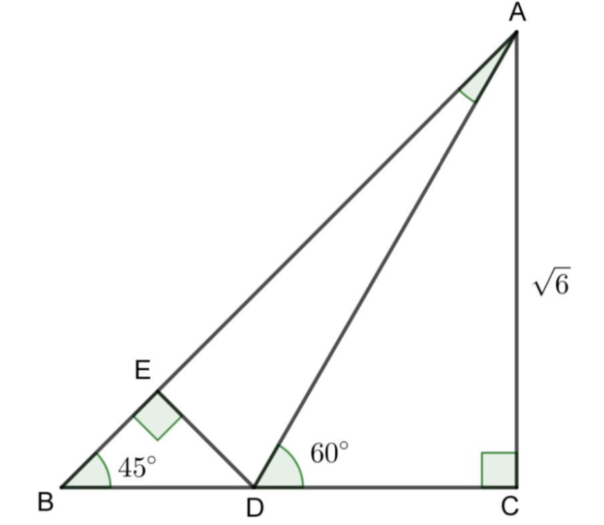
(a.) Find the length of
(i.) DC, and
(ii.) AD.
(Leave your answer in surd form.)
(b.) By considering $\triangle BDE$, show that $DE = \sqrt{3} - 1$
(c.) By considering $\triangle DAE$, show that $\sin 15^\circ = \dfrac{\sqrt{6} - \sqrt{2}}{4}$
$
(a.) \\[3ex]
\underline{\triangle ADC} \\[3ex]
\angle ADC + \angle DCA + \angle CAD = 180^\circ \\[3ex]
60 + 90 + \angle CAD = 180 \\[3ex]
\angle CAD = 180 - 60 - 90 \\[3ex]
\angle CAD = 30^\circ \\[5ex]
\underline{\text{Side Length – Angle Measure Theorem}} \\[3ex]
\text{short side} = |DC| \\[3ex]
\text{medium side} = |AC| = \sqrt{6} \\[3ex]
\text{hypotenuse} = |AD| \\[5ex]
\underline{\triangle ADC: 30^\circ-60^\circ-90^\circ} \\[3ex]
(i.) \\[3ex]
|AC| = \sqrt{3} * |DC|...\text{30° – 60° – 90° Theorem} \\[3ex]
|DC| = \dfrac{|AC|}{\sqrt{3}} \\[5ex]
|DC| = \dfrac{\sqrt{6}}{\sqrt{3}} \\[5ex]
= \dfrac{\sqrt{6}}{\sqrt{3}} * \dfrac{\sqrt{3}}{\sqrt{3}} \\[5ex]
= \dfrac{\sqrt{18}}{3} \\[5ex]
= \dfrac{\sqrt{9} * \sqrt{2}}{3} \\[5ex]
= \dfrac{3\sqrt{2}}{3} \\[5ex]
= \sqrt{2} \\[5ex]
(ii.) \\[3ex]
|AD| = 2 * |DC|...\text{30° – 60° – 90° Theorem} \\[3ex]
|AD| = 2 * \sqrt{2} \\[3ex]
= 2\sqrt{2} \\[5ex]
$
We need to note that there are at least two ways to get |DE|
But the question stated that we have to use $\triangle BDE$
So, we need to some work and get at least one side length of $\triangle BDE$
$
\angle EDA + \angle ADC = \angle EBD + \angle BED \\[3ex]
...\text{exterior angle of a triangle is the sum of two interior opposite angles} \\[3ex]
\angle EDA + 60 = 45 + 90 \\[3ex]
\angle EDA = 135 - 60 \\[3ex]
\angle EDA = 75^\circ \\[5ex]
\underline{Straight Line |BDC|} \\[3ex]
\angle BDE + \angle EDA + \angle ADC = 180^\circ ...\text{sum of angles on a straight line} \\[3ex]
\angle BDE + 75 + 60 = 180 \\[3ex]
\angle BDE = 180 - 75 - 60 \\[3ex]
\angle BDE = 45^\circ \\[5ex]
\angle AED = \angle EBD + \angle EDB \\[3ex]
...\text{exterior angle of a triangle is the sum of two interior opposite angles} \\[3ex]
\angle AED = 45 + 45 \\[3ex]
\angle AED = 90^\circ \\[5ex]
\underline{\triangle AED} \\[3ex]
\angle EAD + \angle AED + \angle EDA = 180^\circ ...\text{sum of angles in a triangle} \\[3ex]
\angle EAD + 90 + 75 = 180 \\[3ex]
\angle EAD = 180 - 75 - 90 \\[3ex]
\angle EAD = 15^\circ \\[3ex]
$
This is what we have so far.
(10.) The figure shows a triangle ABC with the altitude BH and a point D on BD.
If angle ABH = 5x, angle CBH = 3x, angle ACD = 2x, and angle CAD = x.
Find x.
(11.) In Triangle ABC, $\angle A = 62^\circ$, b = 3.4 cm, amd c = 7.1 cm.
Calculate, correct to 2 significant figures, $\angle B$ and $\angle C$
Let us represent the information diagrammatically
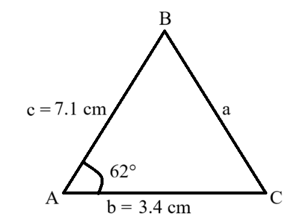
$
a^2 = b^2 + c^2 - 2bc \cos \angle A...\text{Cosine Law} \\[3ex]
a^2 = 7.1^2 + 3.4^2 - 2(7.1)(3.4) \cos 62^\circ \\[3ex]
a^2 = 61.97 - 22.66608705 \\[3ex]
a = \sqrt{39.30391295} \\[3ex]
a = 6.269283288\;cm \\[5ex]
\dfrac{\sin \angle B}{b} = \dfrac{\sin \angle A}{a}...\text{Sine Law} \\[5ex]
\sin \angle B = \dfrac{3.4 \sin 62}{6.269283288} \\[5ex]
\angle B = \sin^{-1}(0.4788460941) \\[3ex]
\angle B = 28.61006569 \\[3ex]
\angle B \approx 29^\circ...\text{to 2 significant figures} \\[5ex]
\dfrac{\sin \angle C}{c} = \dfrac{\sin \angle A}{a}...\text{Sine Law} \\[5ex]
\sin \angle C = \dfrac{7.2 \sin 62}{6.269283288} \\[5ex]
\angle C = \sin^{-1}(0.9999433142) \\[3ex]
\angle C = 89.38993422 \\[3ex]
\angle C \approx 89^\circ...\text{to 2 significant figures} \\[5ex]
\text{Alternatively} \\[3ex]
\angle C + \angle A + \angle B = 180^\circ ...\text{sum of interior angles of a triangle} \\[5ex]
\angle C = 180 - \angle A - \angle B \\[3ex]
\angle C = 180 - 62 - 28.61006569 \\[3ex]
\angle C = 89.38993431 \\[3ex]
\angle C \approx 89^\circ...\text{to 2 significant figures}
$
(12.) $ \sin A = \dfrac{3}{x - 2} \hspace{5em} \sin B = \dfrac{84}{85} \\[5ex]
$
Work out the value of r.
If your answer is a decimal, give it to 1 d.p.
(14.) (a.) Show that the equation
$$
4\cos\theta - 1 = 2\sin\theta\tan\theta
$$
can be written in the form
$$
6\cos^2\theta - \cos\theta - 2 = 0
$$
(b.) Hence solve, for $0 \le x \lt 90^\circ$
$$
4\cos 3x - 1 = 2\sin 3x\tan 3x
$$
giving your answers, where appropriate, to one decimal place.
(Solutions based entirely on graphical or numerical methods are not acceptable.)
(15.) Three points P, Q, R are in a horizontal plane.
Angles RPQ and RQP are α and β respectively.
If PQ is x units in length, show that the perpendicular distance y from R to
PQ is given by $y = \dfrac{x\tan\alpha\tan\beta}{\tan\alpha + \tan\beta}$.
Let the perpendicular distance y from R meet PQ at M
Let us represent the information diagrammatically
(16.) (a.) If $\sin(a) = -\dfrac{4}{5}$ and a resides in the 2nd quadrant, determine the value of
$\dfrac{2\tan(a)}{1 - \tan^2(a)}$
(b.) If $\sin(x) = \dfrac{\sqrt{2}}{2}$ calculate the value of $\dfrac{\sec^2(x) - 1}{\tan^2(x) + 1}$
(a.) sine is positive in the 2nd quadrant...for an angle relative to the horizontal (by default).
But, the question specified that the sine of angle a, which is in the 2nd quadrant is negative.
This implies that the angle is relative to the vertical.
Let k = leg of the right triangle
$
k^2 + 4^2 = 5^2 ...\text{Pythagorean Theorem} \\[3ex]
k^2 = 25 - 16 \\[3ex]
k = \sqrt{9} \\[3ex]
k = 3 \\[3ex]
$
Let us represent the information diagrammatically
(17.) Assume $8\cos x + 15\sin x = 0$, and the angle x resides in the 4th quadrant.
Calculate $\csc x$
$
8\cos x + 15\sin x = 0 \\[3ex]
8\cos x = -15\sin x \\[3ex]
\cos x = -\dfrac{15\sin x}{8} \\[5ex]
...................................................... \\[3ex]
\sin^2 x + \cos^2 x = 1 ...\text{Pythagorean Identity} \\[3ex]
\cos^2 x = 1 - \sin^2 x \\[3ex]
\cos x = \pm\sqrt{1 - \sin^2 x} \\[3ex]
...................................................... \\[3ex]
\implies \\[3ex]
\pm\sqrt{1 - \sin^2 x} = -\dfrac{15\sin x}{8} \\[5ex]
(\pm\sqrt{1 - \sin^2 x})^2 = \left(-\dfrac{15\sin x}{8}\right)^2 \\[5ex]
1 - \sin^2 x = \dfrac{225\sin^2 x}{64} \\[5ex]
64(1 - \sin^2 x) = 225\sin^2 x \\[3ex]
64 - 64\sin^2 x = 225\sin^2 x \\[3ex]
64 = 225\sin^2 x + 64\sin^2 x \\[3ex]
289\sin^2 x = 64 \\[3ex]
\sin^2 x = \dfrac{64}{289} \\[5ex]
\sin x = \pm\sqrt{\dfrac{64}{289}} \\[5ex]
\sin x = \pm \dfrac{8}{17} \\[5ex]
\sin x = \dfrac{8}{17}...\text{discard it because sine is negative in the 4th quadrant} \\[5ex]
\sin x = -\dfrac{8}{17} ...\text{keep it because sine is negative in the 4th quadrant} \\[5ex]
\csc x = \dfrac{1}{\sin x} ...\text{Reciprocal Identity} \\[3ex]
\csc x = 1 \div -\dfrac{8}{17} \\[5ex]
\csc x = -\dfrac{17}{8}
$
$
\sin x = -\dfrac{8}{17} \\[5ex]
x = \sin^{-1}\left(-\dfrac{8}{17}\right) \\[5ex]
$
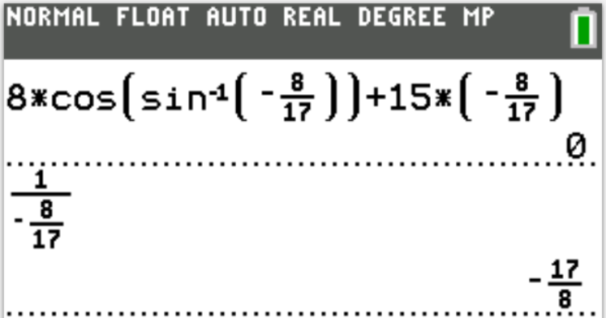
(18.) The angle of elevation of the top of a flagpole is 64° from a point 32 meters away from the foot of
the flagpole.
Find the angle of elevation of the flagpole half way up the flagpole from that point correct to the nearest
degree.
Let: y be the height of the flagpole
α be the angle of elevation of the flagpole half way up the flagpole from that point
Let us represent the information diagrammatically
The identities we are asked to prove are part of the Sum and Difference Formulas.
We shall use the knowledge of these concepts to prove them:
(1.) Unit Circle Trigonometry
(2.) Rotational Transformation
(2.) Even and Odd Identities
Let us draw a unit circle where the origin is the center, with a point, A on the circle where the
point is at an angle of α degrees with the horizontal (positive x-axis).
Recall that a unit circle has a radius of 1 unit.
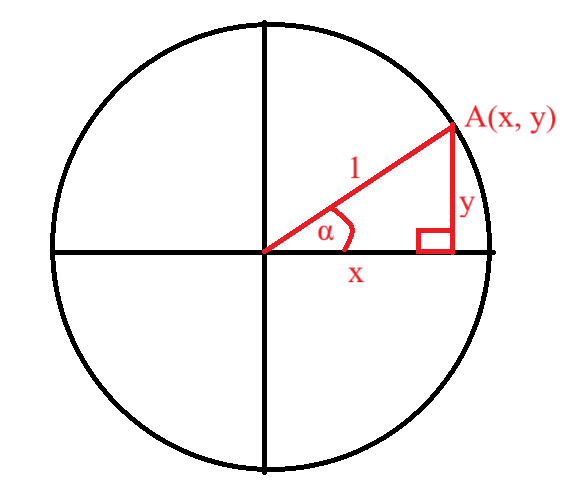
$
\underline{\text{SOHCAHTOA}} \\[3ex]
\cos\alpha = \dfrac{adj}{hyp} = \dfrac{x}{1} \\[5ex]
\cos\alpha = x \\[3ex]
x = \cos\alpha \\[5ex]
\sin\alpha = \dfrac{opp}{hyp} = \dfrac{y}{1} \\[5ex]
\sin\alpha = y \\[3ex]
y = \sin\alpha \\[3ex]
$
Rotate point A counterclockwise through an angle of β degrees
So, we shall have a new image of the point A'
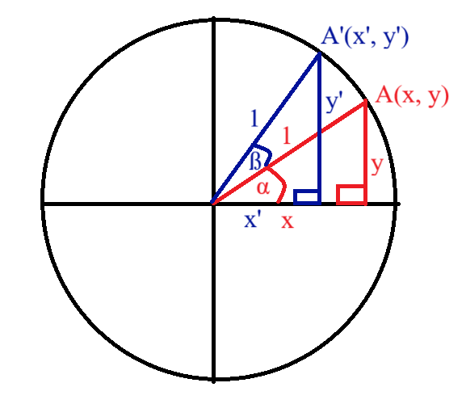
$
\underline{\text{SOHCAHTOA}} \\[3ex]
\cos(\alpha + \beta) = \dfrac{adj}{hyp} = \dfrac{x'}{1} \\[5ex]
\cos(\alpha + \beta) = x' \\[3ex]
x' = \cos(\alpha + \beta) \\[5ex]
\sin(\alpha + \beta) = \dfrac{opp}{hyp} = \dfrac{y'}{1} \\[5ex]
\sin(\alpha + \beta) = y' \\[3ex]
y' = \sin(\alpha + \beta) \\[5ex]
\text{Summarizing what we have so far:} \\[3ex]
\text{Point A}(x, y) \\[3ex]
x = \cos\alpha...eqn.(1) \\[3ex]
y = \sin\alpha...eqn.(2) \\[5ex]
\text{Image of Point A = Point }A'(x', y') \\[3ex]
x' = \cos(\alpha + \beta)...eqn.(3) \\[3ex]
y' = \sin(\alpha + \beta)...eqn.(4) \\[3ex]
$
Based on our knowledge of rotations in geometric transformations, when a point, say A with coordinate
(x, y) is rotated counter-clockwise through an angle say β, then the coordinate of the image of
the point, A' is given by:
$
x' = x\cos\beta - y\sin\beta...eqn.(5) \\[3ex]
y' = x\sin\beta + y\cos\beta ...eqn.(6) \\[5ex]
x' = x' \implies \text{ eqn.(3) = eqn.(5)} \\[3ex]
\cos(\alpha + \beta) = x\cos\beta - y\sin\beta \\[3ex]
\text{From eqn.(1) and eqn.(2); substituting for } x \text{ and } y \\[3ex]
\cos(\alpha + \beta) = \cos\alpha\cos\beta - \sin\alpha\sin\beta...\text{Sum Formula for Cosine} \\[5ex]
y' = y' \implies \text{ eqn.(4) = eqn.(6)} \\[3ex]
\sin(\alpha + \beta) = x\sin\beta + y\cos\beta \\[3ex]
\text{From eqn.(1) and eqn.(2); substituting for } x \text{ and } y \\[3ex]
\sin(\alpha + \beta) = \cos\alpha\sin\beta + \sin\alpha\cos\beta \\[3ex]
\sin(\alpha + \beta) = \sin\alpha\cos\beta + \cos\alpha\sin\beta ...\text{Sum Formula for Sine} \\[5ex]
\underline{\text{Now unto the Difference Formulas}} \\[3ex]
\text{From the Sum Formula for Cosine} \\[3ex]
\cos(\alpha + \beta) = \cos\alpha\cos\beta - \sin\alpha\sin\beta \\[3ex]
\cos(\alpha - \beta) = \cos\alpha\cos(-\beta) - \sin\alpha\sin(-\beta) \\[3ex]
\text{But: } \\[3ex]
\cos(-\beta) = \cos\beta...\text{Even Identity} \\[3ex]
\sin(-\beta) = -\sin\beta ...\text{Odd Identity} \\[3ex]
\implies \\[3ex]
\cos(\alpha - \beta) = \cos\alpha\cos\beta - \sin\alpha * -\sin\beta \\[3ex]
\cos(\alpha - \beta) = \cos\alpha\cos\beta + \sin\alpha\sin\beta...\text{Difference Formula for Cosine}
\\[5ex]
\text{From the Sum Formula for Sine} \\[3ex]
\sin(\alpha + \beta) = \sin\alpha\cos\beta + \cos\alpha\sin\beta \\[3ex]
\sin(\alpha - \beta) = \sin\alpha\cos(-\beta) + \cos\alpha\sin(-\beta) \\[3ex]
\sin(\alpha - \beta) = \sin\alpha\cos\beta + \cos\alpha * -\sin\beta \\[3ex]
\sin(\alpha - \beta) = \sin\alpha\cos\beta - \cos\alpha\sin\beta...\text{Difference Formula for Sine}
$
(20.)
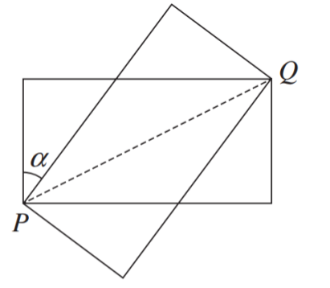
The diagram shows two rectangles.
Each rectangle is 6 cm long and 3 cm wide, and they share a common diagonal PQ
Show that $\tan\alpha = \dfrac{3}{4}$
Let us represent the information clearly on the diagram
Let β be the angle between line |PC| and the diagonal |PQ|
(21.) If $\cos\alpha\cos\beta = \dfrac{1}{2}$ and $\sin\alpha\sin\beta = \dfrac{1}{3}$, determine the value of
these expressions, writing your answers in exact form.
(22.) Given that the first three terms of a geometric series are
$$
12\cos\theta \hspace{4em} 5 + 2\sin\theta \hspace{2em}\text{and}\hspace{2em} 6\tan\theta
$$
show that
$$
4\sin^2\theta - 52\sin\theta + 25 = 0
$$